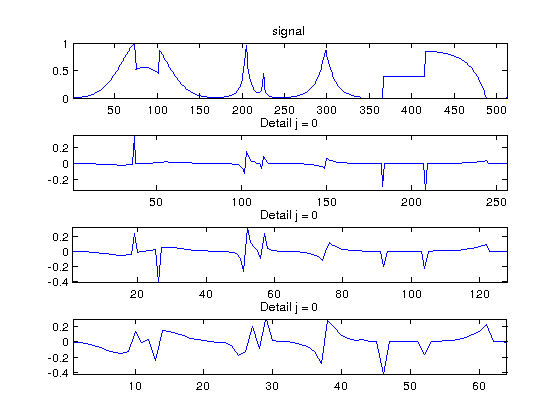
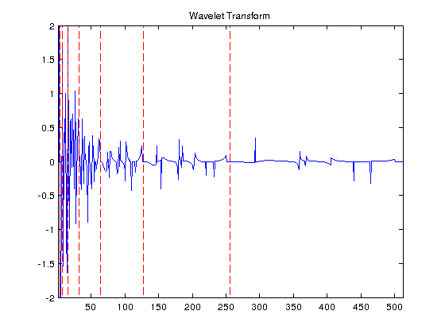
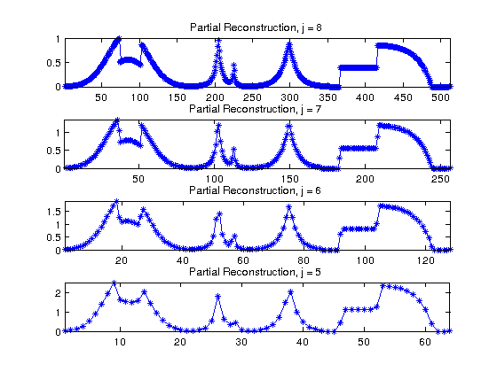

Contents
Ben Postlethwaite 76676063
Assignment 2
clear all; close all; loadtools;
Select Image
name = 'piece-regular';
n = 512;
f = rescale( load_signal(name, n) );
Exercise 1 - 1D Haar Wavelets
fw = f; jj = 8; Detail = []; figure(1) for ii = 1:jj+1 j = log2(n)-ii; A = fw(1:2^(j+1)); coarse = ( A(1:2:length(A)) + A(2:2:length(A)) )/sqrt(2); detail = ( A(1:2:length(A)) - A(2:2:length(A)) )/sqrt(2); Detail = [detail; Detail]; fw = [coarse; Detail]; end figure(1) subplot(4,1,1) plot(f) axis tight title('signal') for ii = 1:3 subplot(4,1,ii+1) plot(fw( (2^(jj+1-ii))+1 : (2^(jj+2-ii)) ) ) title(sprintf('Detail j = %i',j)) axis tight end disp(strcat(['Energy of the signal = ' num2str(norm(f).^2,3)])); disp(strcat(['Energy of the coefficients = ' num2str(norm(fw).^2,3)])); figure(2) plot_wavelet(fw); title('Wavelet Transform') axis([1 n -2 2]);
Energy of the signal = 88.6 Energy of the coefficients = 88.6 
Question 2
f1 = fw; Coarse = []; for j = 0:jj coarse = f1(1:2^j); Detail = f1(2^j+1:2^(j+1)); f1(1:2:2^(j+1)) = ( coarse + Detail )/sqrt(2); f1(2:2:2^(j+1)) = ( coarse - Detail )/sqrt(2); Coarse = [Coarse ;coarse]; end disp(strcat((['Error |f-f1|/|f| = ' num2str(norm(f-f1)/norm(f))]))); figure(3) subplot(4,1,1) plot(f); title('Partial Reconstruction, j = 8') hold on; plot(f1,'*') axis tight for ii = 1:3 subplot(4,1,ii+1) plot(Coarse( (2^(jj+1-ii)) : (2^(jj+2-ii)) - 1),'-*') title(sprintf('Partial Reconstruction, j = %i ',jj-ii)) axis tight hold on end
Error |f-f1|/|f| = 1.0168e-15